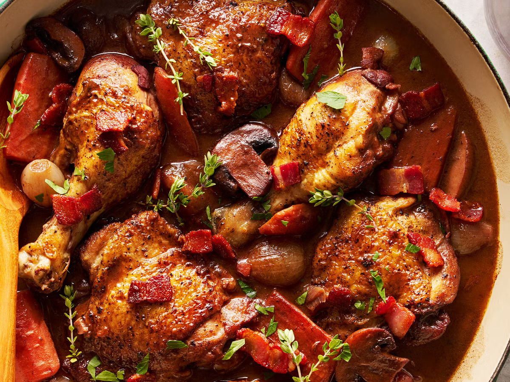

French Cuisine

Coq au Vin
Ingredients:
- 1 whole chicken, cut into pieces
- 2 cups red wine (preferably Burgundy)
- 1 onion, sliced
- 2 cloves garlic, minced
- 1 cup mushrooms, sliced
- 2 tbsp flour
- Salt and pepper to taste
Instructions:
- Marinate the chicken in red wine for 2-4 hours, adding garlic and herbs.
- Brown the chicken pieces in a pot, then remove and set aside.
- In the same pot, sauté onions and garlic, then add mushrooms.
- Return the chicken to the pot and pour in the wine marinade. Add flour, salt, and pepper.
- Simmer for 1-2 hours until the chicken is tender and the sauce is rich.
- Serve with crusty bread or mashed potatoes.

Ratatouille
Ingredients:
- 1 eggplant, sliced
- 2 zucchinis, sliced
- 2 bell peppers, sliced
- 2 tomatoes, diced
- 1 onion, chopped
- 2 cloves garlic, minced
- 2 tbsp olive oil
- Salt and pepper to taste
Instructions:
- Preheat oven to 375°F (190°C).
- Arrange sliced vegetables on a baking sheet.
- Drizzle with olive oil and sprinkle with garlic, salt, and pepper.
- Bake for 25-30 minutes, stirring occasionally until tender.
- Serve hot as a side dish or main course.